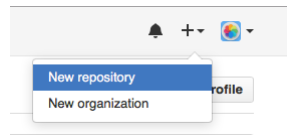
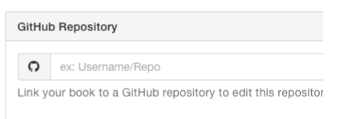
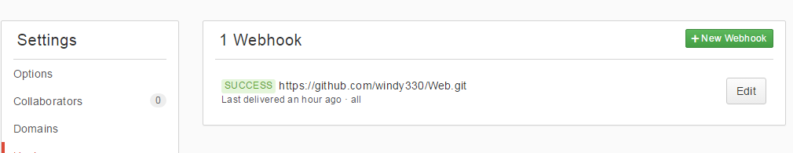
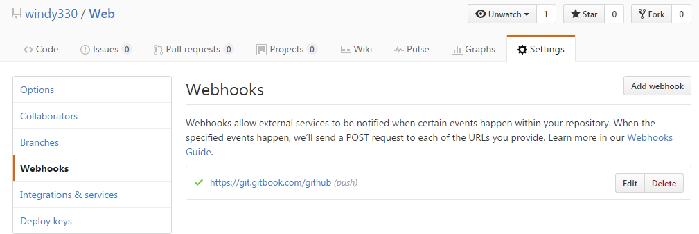

GitBook安装简介
- 安装了GIt,有GitHub账号
- 下载GitBook.Editor
- 安装完用GitHub账号登录
- 将GitBook与GitHub绑起来
- 在GitHub首页new repository 
- 注意"Initialize this repository with a README"要勾选
- 用GitHub账号登录GitBook(www.gitbook.com)官网
- 点击+New Book建你的书名,最好与Repository的名字一样
- 绑定开始:在这本书的Settings点击GitHub,把刚才Repository里面的地址复制进去  10.+New Webhooks,,把刚才Repository里面的地址复制进去  11.复制这本书的Settings点击GitHub里面的Webhook URL里面的地址复制(地址B) 12.切换到GitHub页面里面新建Repository项目详情的settings页面add Webhooks,plyLoad里面填地址B  13.绑定完成